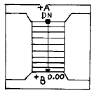
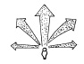
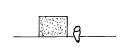
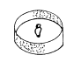
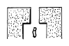
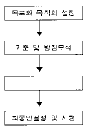
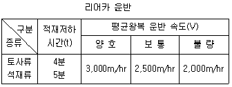
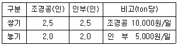

조경산업기사 (2004-09-05 기출문제)
1과목: 조경계획 및 설계
1. 어린이공원의 내용으로 가장 잘못된 것은?
- 아이들의 감성적인 부분을 고려해 정적인 공간을 많이 두어야 한다.
- 기능은 운동, 놀이, 휴식 등이다.
- 공원 내 놀이시설의 안전성이 고려되어야 한다.
- 접근성을 고려해야 한다.
(정답률: 89%)

2. 인간 행태 관찰에 관한 기술로 가장 옳지 않는 것은?
- 행태가 일어나는 상황을 보다 절실하게 파악할 수 있다.
- 행태의 기록 방법으로서는 조사표를 사용하며, 사진, 비디오는 배제시킨다.
- 시간의 흐름에 따라 변하는 연속적인 행태를 관찰할 수 있다.
- 관찰자의 출현이 행위자들의 행위에 영향을 미치지 않도록 한다.
(정답률: 78%)
3. 우리나라의 도시공원법상 그 기능에 따른 도시공원의 구분에 해당하지 않는 것은?
- 어린이공원
- 근린공원
- 지구공원
- 도시자연공원
(정답률: 89%)
4. 동선에 대한 설명으로 가장 적당하지 않은 것은?
- 축구경기장, 대형건물 입구, 주차장 등에서는 넓고 직선적인 처리가 효과적이다.
- 산책을 위해서는 길을 따라서 다양하고도 감각적인 경험을 할 수 있도록 한다.
- 보행로의 설계는 장소성과 동일성, 변화성과 신비감 그리고 둘러싸임 같은 개념들을 포함해야 한다.
- 대학 캠퍼스에서는 보행자 거리의 최단거리를 채택할 필요가 없다.
(정답률: 94%)
5. 오픈 스페이스의 종류 중 공공 오픈스페이스에 해당하는 것은 어느 것인가?
- 농지나 산림
- 공원
- 유원지
- 주택정원
(정답률: 65%)
6. 여가 공간 계획시 계획 1일 평균수량(平均水量)은 계획 1일 최대 급수량의 얼마를 표준으로 해야 하는가?
- 50 ~ 65%
- 60 ~ 75%
- 70 ~ 85%
- 80 ~ 90%
(정답률: 43%)
7. 그림은 정원설계도에 나타난 계단부분의 평면도이다. 계단의 단면의 폭이 30cm, 단 높이가 15cm라 하면, B지점의 상대표고가 0.00일 때 A지점의 표고는?

- 1.35 m
- 1.50 m
- -1.35 m
- -1.50 m
(정답률: 65%)
8. 조경의 개념을 가장 포괄적으로 적절히 설명한 것은?
- 온 가족이 단란하고 즐겁게 생활할 수 있도록 환경을 아름답게 꾸미고 또 관리하는 일이다.
- 도시의 발달, 공장지대의 조성등으로 파괴된 자연을 정돈, 개조, 보수하는 일이다.
- 자연환경을 보다 아름답게 정비, 보전, 수식하여 인간들에게 제공하는 일이다.
- 생활환경의 개선을 위하여 토지를 보다 아름답게 또 경제적으로 개발조성하는데 필요한 기술과 예술이 종합된 실천과학이다.
(정답률: 75%)
9. 옥상정원의 혼합토양에 섞어 사용하는 피이트(Peat)에 관한 설명으로 가장 틀린 것은?
- 토양 분리층이다.
- 보수력이 좋으면서 투수성을 향상시켜 준다.
- 일종의 이탄층이다.
- 토양의 무게를 줄여주는 경량재이다.
(정답률: 44%)
10. 경관(景觀)의 기본 유형을 그림으로 나타낸 것이다. 이들 중 파노라믹한 경관의 그림은?




(정답률: 73%)
11. 음양 오행사상에 따른 다섯가지 색채(오방정색)에 가장 적합하지 않는 것은?
- 청색
- 적색
- 녹색
- 황색
(정답률: 77%)
12. 근린공원계획 및 설계시 고려해야 할 사항으로 가장 잘못 설명된 것은?
- 근린공원은 놀이, 운동, 휴식, 모임, 교화, 환경 보전의 기능을 담을 수 있어야 한다.
- 운동공간에 인접하여 도서관이나 전시실, 야외극장등 교양시설을 설치하지 않도록 한다.
- 규모가 큰 근린공원일수록 각종 지역활동을 수용할 수 있는 다목적공간을 배치하는 것이 좋다.
- 공원내 동선은 주동선, 보조동선, 관리동선으로 분리 하도록 하고, 출입구는 관리적 측면에서 되도록 제한적으로 적게 한다.
(정답률: 72%)
13. 일반 설계과정은 프로젝트 수주, 조사 및 분석, 설계, 실시설계, 시공, 시공 후 평가 및 관리의 순으로 이루어지는데, 다음 중 설계에 해당되는 것은?
- 프로그램 작성
- 개념도 발전
- 의뢰자 인터뷰
- 공사 흐름도 작성
(정답률: 62%)
14. 다음의 표는 조경계획의 일반과정을 나타낸 것으로 빈칸에 가장 알맞은 것은?

- 경관분석
- 이용 후 평가
- 대안의 작성 및 평가
- 설계서 작성
(정답률: 67%)
15. 주택정원의 역할과 관계가 가장 먼 항목은？
- 자연의 공급
- 외부로부터의 조망 확보
- 외부생활공간의 기능
- 심미적 쾌감 제공
(정답률: 50%)
16. 도시공원법 및 그 시행규칙에 의해 2,000m2의 어린이공원을 조성하고자 한다. 이때 녹지를 제외한 각종 시설을 설치할 수 있는 최대 면적은？
- 1,200m2
- 1,000m2
- 800m2
- 600m2
(정답률: 25%)
17. 프로그램이란 설계시 필요한 요소와 요인들에 대한 목록과 표를 말하는데, 이 프로그램의 구성은 세 가지로 이루어진다. 다음 중 구성 요소로 가장 보기 어려운 것은?
- 설계 목적과 목표
- 설계에 포함되어야 할 요소들의 목록
- 설계상의 특별한 요구사항
- 설계 비용
(정답률: 80%)
18. 조경계획의 조사분석 항목인자는 7가지로 구분되는데, 이중 지권(地圈)과 관련성이 가장 없는 것은?
- 토양
- 지하수
- 지질
- 경사도
(정답률: 73%)
19. 축척(scale)에 관한 설명으로 가장 잘못된 것은?
- 축척이 반복되도 도면마다 기입한다.
- 같은 도면 중에 2개 이상의 다른 축척은 사용할 수 없다.
- 도면안에 사용한 척도는 도면의 표제란에 기입한다.
- 그림의 모양이 치수에 비례하지 않아 착각될 우려가 있을 때는 N· S 등으로 명시한다.
(정답률: 57%)
20. G. Eckbo는 새로운 정원 형태를 4가지로 분류하였는데 다음 중 이에 해당하지 않는 것은?
- 기하학적· 구조적 정원(geometric-structuralgarden)
- 기하학적· 자연적 정원(geometric-natural garden)
- 자연적· 구조적 정원(natural-structural garden)
- 정형식 정원(formal garden)
(정답률: 64%)
2과목: 조경식재
21. 뿌리 돌림에 대한 설명으로 가장 거리가 먼 것은?
- 이식이 어려운 수종은 2~4등분하여 연차적으로 한다.
- 가을 보다는 봄에 하는 것이 더 효과적이다.
- 잔뿌리가 내리도록 해서 이식을 쉽게 하기 위한 작업이다.
- 이식 시기로 부터 적어도 6개월 ~ 3년전에 준비한다.
(정답률: 35%)
22. 단지 설계시 발생되는 비탈면에 식생공법을 이용하는 이유로 가장 거리가 먼 것은?
- 지표면의 온도 상승 방지.
- 식물의 수관에 의한 표토의 토립자에 대한 동상봉락(凍上峯落) 억제.
- 바람· 우수 등에 의한 침식 방지.
- 시공단가를 높이기 위해.
(정답률: 80%)
23. 식물생육에 필요한 토양의 생존 최소심도로 가장 적당한 것은?
- 잔디 및 초화류 15㎝, 소관목 30㎝, 대관목 45㎝, 천근성교목 60㎝, 심근성교목 90㎝
- 잔디 및 초화류 30㎝, 소관목 45㎝, 대관목 60㎝, 천근성교목 90㎝, 심근성교목 150㎝
- 잔디 및 초화류 30㎝, 소관목 60㎝, 대관목 90㎝, 천근성교목 150㎝, 심근성교목 180㎝
- 잔디 및 초화류 15㎝, 소관목 45㎝, 대관목 60㎝, 천근성교목 90㎝, 심근성교목 120㎝
(정답률: 69%)
24. 생울타리를 조성하려고 한다. 다음 수종들 중 가지에 예리한 가시가 있는 수종은?
- 유카
- 명자나무
- 호랑가시나무
- 광나무
(정답률: 60%)
25. 설계도서 작성시 시방서 작성에 관한 사항들이다. 식재설계의 특별시방서 내용에 포함될 사항으로 구성된 항목은?
- 건교부 제정의 표준시방서 내용을 일반적으로 작성한다.
- 설계 설명서를 포함하여야 하며, 그 내용은 사업장의 위치, 공사개요 등이다.
- 도면에 표시할 수 없는 여러 사항을 문서로 나타내는 일종의 설계 행위다.
- 수목 품질에 관한 사항, 규격 표시방법, 수세, 수형, 자연석 놓기, 쌓기 등 식재와 관련되는 특수내용이 포함될 수 있다.
(정답률: 58%)
26. 다음 경관조절 식재기능의 항목으로 가장 거리가 먼 것은?
- 지표식재
- 경관식재
- 차폐식재
- 녹음식재
(정답률: 67%)
27. 다음 용토(用土) 중 옥상조경용 인조용토가 아닌 것은?
- 버어미큘라이트
- 퍼얼라이트
- 피이트
- 부엽토
(정답률: 74%)
28. 염분의 피해한계농도는 잔디의 경우 몇 % 인가?
- 0.⑤%
- 0.1%
- 0.3%
- 0.5%
(정답률: 61%)
29. 식생의 기상학적 이용(기능)으로 가장 거리가 먼 것은?
- 대기 정화작용
- 태양 복사열 조절작용
- 바람의 조절작용
- 온도 조절작용
(정답률: 74%)
30. 다음 수목 중 음수가 아닌 것은?
- 개비자나무
- 전나무
- 자작나무
- 굴거리나무
(정답률: 45%)
31. 문화재 보호구역을 식재보수 계획하고자 할 때 전통배식 방법으로 가장 적당한 것은?
- 자연풍경식재
- 정형식재
- 대칭식재
- 교호식재
(정답률: 75%)
32. 초여름에 잎을 모두 훑어버리고 식재해도 활착할 수 있는 수목으로 잘못된 것은?
- Magnolia denudata Desrousseaux
- Acer buergerianum Miqule
- Acer palmatum Thunberg
- Ulmus parvifolia Jacquin
(정답률: 95%)
33. 공해에 약한 수종은 어느 것인가?
- Pinus densiflora Siebold et Zuccarini
- Punica granatum Linnaeus
- Gardenia jasminoises for. grandiflora Makino
- Fatsia japonica Decaisne et Planchon
(정답률: 58%)
34. 상록 활엽교목류로 짝지어 진 것은?
- 녹나무, 가시나무, 개비자나무.
- 녹나무, 가시나무, 소귀나무.
- 화백, 태산목, 후박나무.
- 감탕나무, 개비자나무, 녹나무.
(정답률: 58%)
35. 방음식재에 대한 기술 중 가장 거리가 먼 것은?
- 보호대상물 쪽으로 접근해서 식재한다.
- 지엽(枝葉)이 치밀한 수목이 좋다.
- 상록수의 밀식이 좋다.
- 소음원(騷音沅) 쪽으로 접근해서 식재한다.
(정답률: 60%)
36. 식재설계의 미적요소 중 변화에 대한 설명으로 가장 바르게 표현된 것은?
- 너무 적은 변화는 시각적 혼돈을 야기시킨다.
- 많은 변화는 시각적으로 강조의 표현이 될 수 있다.
- 동일한 형태의 식재는 변화는 없으나 강조는 있다.
- 적절한 변화의 사용은 강조가 요구되는 곳에 사용될수 있다.
(정답률: 57%)
37. 대지면적이 10,000m2인 계획부지에 녹지율이 25%이다. m2당 교목은 0.2본, 관목은 0.5본으로 식재하고, 상록과 낙엽교목의 비율을 4 : 6으로 하고자 한다. 상록교목은 몇 주 식재해야 하는가?
- 100주
- 200주
- 300주
- 400주
(정답률: 69%)
38. 골프장 그린(green)지역에 사용하기 가장 좋은 잔디는?
- 들잔디
- 라이 그래스
- 벤트 그래스
- 금잔디
(정답률: 34%)
39. 수목에서 수관형이 원정(둥근)의 누상형인 것은?
- 메타세쿼이어
- 석류나무
- 플라타너스
- 섬잣나무
(정답률: 60%)
40. 토양침식을 억제하기 위한 식생의 피복에 따른 효과로 가장 거리가 먼 것은?
- 표면유수를 감소시킨다.
- 지면의 경사도를 완화시킨다.
- 토양에 대한 빗물의 충격을 감소시킨다.
- 식물뿌리에 의하여 토양입자를 고정시킨다.
(정답률: 69%)
3과목: 조경시공
41. 흙을 100m 거리로 리어카를 이용하여 운반하려 한다. 운반로가 보통일 때 하루에 운반하는 흙은 몇 m3나 되는 가 ? (단, 흙 1m3 = 1,800Kg, 하루의 작업시간은 450분, 리어카의 1회 적재량은 250Kg 이고, 적재적하시간과 평균 왕복속도는 다음 표와 같다.)

- 4.26m3
- 5.342m3
- 7.102m3
- 9.678m3
(정답률: 44%)
42. 힘의 방향과 작용점만이 서로 다르고 힘의 크기가 같을 때 이 힘을 무엇이라고 하는가?
- 축력
- 우력
- 반력
- 합력
(정답률: 70%)
43. 다음 정원석 석축공에 대한 인부품을 참조하여 정원석 쌓기 10t, 놓기 20t에 대한 노임을 계산하면 얼마인가?

- 625,000원
- 825,000원
- 975,000원
- 1,250,000원
(정답률: 83%)
44. 보(beam)에 관한 설명으로 맞는 것은?
- 단순보는 보의 한쪽 끝만이 지지되고 있다.
- 캔틸레버보는 한쪽 끝이 고정지점이고, 다른 한쪽은 자유인 상태이다.
- 내다지보는 보의 한쪽 끝이 지점에서 바깥쪽으로 내다지된 것만을 말한다.
- 고정보는 보의 한쪽 끝을 메워 넣어 고정한 것이다.
(정답률: 58%)
45. 흡수율이 높은 벽돌에 대한 내용 중 적합하지 않는 것은 어느 것인가?
- 일반적으로 외벽의 치장용으로 많이 쓴다.
- 백태현상이 일어나기 쉽다.
- 겨울철에 동파(凍破)되기 쉽다.
- 일반적으로 무게가 가볍다.
(정답률: 48%)
46. 콘크리트를 배합할 때 골재의 건조 상태는 어느 것을 전제로 하는가?
- 절대 건조상태
- 공기 중 건조상태
- 표면건조 포화상태
- 습윤 상태
(정답률: 39%)
47. 세로 규준틀이 많이 쓰이는 공사는?
- 조적공사
- 토공사
- 방수공사
- 미장공사
(정답률: 77%)
48. 측구등에서 흘러나오는 빗물을 하수 본관으로 유하시키기 위해 측구 도중에 설치하는 시설은?
- 집수지
- 우수받이
- 맨홀
- 유동관
(정답률: 53%)
49. 조경 설계의 견적시 수량 계산에 관한 사항 중 맞지 않는 것은?
- 면적의 계산 중 구적기(Planimeter)를 사용하는 경우 3회이상 측정하여 그 중 정확하다고 생각되는 평균값으로 정한다.
- 볼트의 구멍부분은 구조물의 수량계산에서 공제하지 아니한다.
- 절토량은 자연상태의 설계도의 양으로 한다.
- 수량은 C.G.S 단위와 척, 관 단위를 병행함을 원칙으로 한다.
(정답률: 59%)
50. 높이 2m 길이 5m인 콘크리트 화단 전면에 표준형 벽돌을 0.5B 두께로 치장쌓기를 하려할 때, 소요되는 벽돌은 몇매인가 ? (단 표준형 벽돌 0.5B 쌓기시 75매/m2를 적용하고, 할증은 고려하지 않는다.)
- 375매
- 750매
- 3,750매
- 7,500매
(정답률: 67%)
51. 공사설계 내역서 산정시 원단위 이상이 아닌 것은?
- 설계서의 총액
- 설계서의 소계
- 일위대가표의 계
- 일위대가표의 금액란
(정답률: 65%)
52. 다음 중 사면붕괴에 가장 큰 영향을 미치는 것은?
- 자유수
- 흡착수
- 화학결합수
- 모관수
(정답률: 63%)
53. 공정관리에 관한 설명으로 맞지 않는 것은?
- 횡선식 공정표는 공기에 영향을 미치는 작업을 알기 쉽다.
- CPM은 각 작업들의 연관성을 알기 쉽다.
- 네트워크 공정표는 대형공사에 적합하다.
- PERT는 네트워크 공정표의 일종이다.
(정답률: 53%)
54. 다음 중 건설업 개방에 따른 국가경쟁력 강화, 부실공사방지, 건설수주의 대형화, 고급화에 따른 대응방안으로 제시된 입찰제도는?
- PQ제도
- 부대입찰제도
- 대안입찰제도
- 수의계약
(정답률: 67%)
55. 어느 옹벽의 활동력이 3,000㎏이고 기초 지반의 마찰계수는 0.6이다. 이 옹벽의 중량은 5,000㎏일 때 활동에 대한 안전계수는 얼마인가?
- 1.0
- 1.7
- 2.0
- 3.4
(정답률: 59%)
56. 조경공사의 예정가격을 원가계산에 의한 가격으로 예정가격 결정시 법률에 정한 일정 비율을 곱하여 산정한 금액으로 하는 비목은?
- 재료비
- 노무비
- 경비
- 일반관리비
(정답률: 60%)
57. 공사 일시 중지 사유에 해당되지 않는 것은?
- 기후의 악조건
- 공사 종사원의 안전상 필요시
- 시공자가 감독자의 지시에 응하지 않을 때
- 발주자의 설계변경 요구시
(정답률: 64%)
58. 목재의 건조전 시료의 중량을 200g에서 건조하였더니 40g이 줄었다. 이 때의 함수율은?
- 20%
- 25%
- 40%
- 60%
(정답률: 40%)
59. 다음 철근의 갈고리(hook)에 대한 설명으로 적합하지 않은 것은?
- 철근이 콘크리트에서 빠져 나오지 않도록 하기 위해 만든다.
- 압축력을 받는 곳에 설치한다.
- 일반적으로 사용되는 철근은 상온에서 구부려야 한다.
- 기둥에 사용되는 철근에서는 반드시 그 끝을 갈고리를 만들어 써야 한다.
(정답률: 22%)
60. 노반 재료의 지지력을 측정하기 위해 시행하는 것은?
- CBR시험
- 슬럼프시험(slump test)
- 보링(boring)
- 사운딩(sounding)
(정답률: 33%)
4과목: 조경관리
61. 다음 중 저온에 의한 피해 현상으로만 짝 지워진 것은?
- 늦서리(晩霜) - 상해옹이(frost canker)
- 상렬 - 거들링(girdling)
- 이른서리(早霜) - 위연륜(false annual ring)
- 일소 - 컵쉐이크(cup shake).
(정답률: 32%)
62. 조경 관리계획을 수립함에 있어서 일반적으로 검토되어야 할 조건들로만 형성된 것은?
- 자연환경 조건, 이용자 빈도, 시설의 형태와 규모
- 사회적 배경, 역사적 자료, 문화적 배경
- 사업비 규모, 예산의 범위, 사업성 검토
- 동선의 형태, 주차규모, 시설의 수요
(정답률: 74%)
63. 아스팔트 및 골재가 떨어져 나가는 현상으로 아스팔트의 부족과 혼합물의 과열, 혼합불량 등 표층 자체의 품질 불량이 주원인이 되어 나타나는 아스팔트 포장의 하자 종류는?
- 균열
- 침하
- 박리
- 표면연화
(정답률: 36%)
64. 매화나무의 경우 꽃이 피고 난 후 강전정을 실시하는 경우가 있다. 이러한 전정의 목적은?
- 수형 조절
- 생장 억제
- 수분수급 조절
- 개화결실 촉진
(정답률: 56%)
65. 서양잔디를 이용하여 종자 뿜어붙이기를 한 후 정상적인 유지관리를 하였을 때 피복완성까지의 표준시간은 얼마 정도 소요되는가?
- 15일 ∼ 1개월
- 2개월 ∼ 3개월
- 4개월 ∼ 5개월
- 6개월 ∼ 9개월
(정답률: 54%)
66. 다음은 사고의 종류에 관한 내용을 서술한 것들이다. 설치하자에 의한 사고는 어느 것인가?
- 시설의 노후, 파손에 의한 사고
- 시설의 구조 자체의 결함에 의한 사고
- 위험물의 방치에 의한 사고
- 위험장소의 안전대책 미비에 의한 사고
(정답률: 74%)
67. 시설물 보수 사이클과 내용 연수의 연결이 잘못된 것은?
- 파골라(목재) - 10년 - 3 ~ 4년
- 벤치(목재) - 7년 - 5 ~ 6년
- 그네(철재) - 15년 - 2 ~ 3년
- 안내판(철재) - 10년 - 3 ~ 4년
(정답률: 63%)
68. 다음 중 비탈면 표층부의 붕괴 방지 및 일부 토압을 받을 위험이 있는 장소의 토석 및 암반의 붕락 방지를 위하여 가장 효과적인 비탈면 보호공법은?
- 떼붙임공
- 식생 자루공
- 비탈면 앵커공
- 모르타르 붙임공
(정답률: 59%)
69. 다음 조경 식재 공사의 하자보수 의무 대상은?
- 화재, 낙뢰, 파열, 폭발 등에 의한 식재된 식물의 고사
- 폭풍, 홍수, 지진에 의한 경우에 의한 식재된 식물의 고사
- 전쟁, 내란, 폭동 등에 준하는 사태로 식재된 식물의 고사
- 도복, 병해, 서리, 동해 등으로 식재된 식물의 고사
(정답률: 65%)
70. 여름 · 가을 화단용 화초로 적당한 것으로 짝지은 것은?
- 작약, 금잔화, 수선
- 페튜니아, 패랭이꽃, 안개초
- 다알리아, 국화, 색비름
- 튤립, 히야신스, 팬지
(정답률: 60%)
71. 다음 중 시비 방법이 좋지 않은 것은?
- 작은 나무들이 가깝게 식재된 경우 → 전면시비
- 교목이 넓은 간격으로 식재된 경우 → 방사상 시비
- 경계선의 산울타리 → 윤상시비
- 뿌리가 많은 관목의 집단 → 천공시비
(정답률: 43%)
72. 유희시설물의 유지관리 계획의 수립에 필요한 사항으로 적합하지 않는 것은?
- 사회적 배경 및 사회적 요구의 변화
- 시간별 이용자 및 이용 행태별 조사
- 시설물 이용의 최대한 억제 방법 조사
- 건물 상태, 강우, 쾌청 일수 조사
(정답률: 67%)
73. 다음 식물병의 예방에 관한 내용으로 거리가 먼 것은?
- 중간기주의 제거
- 멀칭
- 내병성 품종의 이용
- 윤작(輪作)
(정답률: 50%)
74. 조경 시설물 보수공사시 청부공사를 해야 하는 것은?
- 식물에 대한 일상적 관리 및 정지, 전정, 시비작업
- 기능적(技能的)인 노무를 행하는 공사
- 시설물의 도장 등 간단한 보수와 응급 처치
- 진척 상황이 명확치 않고 검사하기 어려운 업무
(정답률: 32%)
75. 식물의 아래 잎에서부터 위로 차츰 황화(Chlorosis)현상이 일어나고 심하면 잎 전면에 나타나며 잎이 작고 그 수가 적어진다. 초본류에서는 초장이 낮아지고 일찍 낙엽 현상이 일어난다. 이와 같은 증상이 비료의 결핍에 원인이 있다면 다음 중 어느 성분인가?
- 질소
- 인산
- 칼륨
- 석회
(정답률: 71%)
76. 조경수목과 시설물 관리를 위한 예산, 재무제도, 조직, 재산 등의 업무기능을 수행하는 조경관리에 해당되는 것은?
- 유지관리
- 운영관리
- 이용관리
- 사후관리
(정답률: 70%)
77. 습윤한 목재를 가해하는 대표적인 해충류는?
- 가루나무좀류
- 흰개미류
- 개나무좀류
- 하늘소류
(정답률: 63%)
78. 뗏밥주기에 대한 설명 중 적당하지 않은 것은?
- 뗏밥은 보통세사: 2, 토양: 1, 유기물을 혼합하여 약 5mm의 체를 통과한 것을 사용한다.
- 금잔디, 들잔디 등 난지형 잔디들은 잔디 생육이 왕성할 때 행한다.
- 뗏밥은 한번에 두껍게 주는 것보다는 여러번 얇게 준다.
- 뗏밥은 뗏밥을 줄 잔디의 토양과 다른 성분으로 구성된 것을 사용하여야 한다.
(정답률: 71%)
79. 과다 질소 시비시 발병이 조장되는 잔디의 병이 아닌것은?
- 달라스팟(Dollar Spot)
- 브라운 패치(Brown Patch)
- 설부병(雪腐病)
- 잎반점병
(정답률: 31%)
80. 일반적으로 수목의 이식 후 관리 사항으로서 옳지 않은 것은?
- 매일 관수한다.
- 수피(樹皮)를 새끼나 거적으로 감싸준다.
- 잎이 많은 경우에는 영양제나 수분 증산억제제를 살포한다.
- 가지나 잎을 적당히 제거한다.
(정답률: 60%)